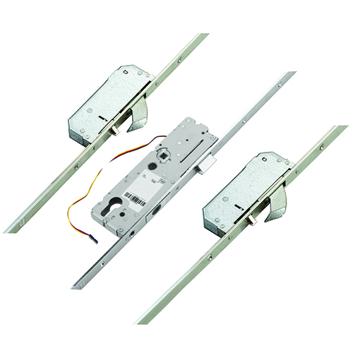
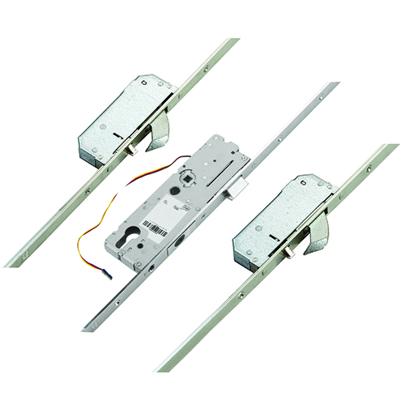

Door Locks
Door locks are a type of lock that stops a door from being opened. There will not be any vaults as they are arder to analyze and can be summed up as complex variations of the combonation padlocks that cannot be moved. I also will not include locks that can be put on doors like chain locks due to chain locks only being used when someone is inside.
deadbolts (and the locks very similar to them)
The basic deadbolt works likes a key padlock, but when the key is turned
a deadbolt is pushed into an indent on the wall on the opposite side of the deadbolt. These locks
have a vey common appearance on hinged doors in households and corporations. Without the key
it is very difficult to forcefully push the door open (Unless the door is made of glass).
 

If you want a deadbolt lock for a sliding door that cannot happen due to sliding doors
will only slide the deadbolt out. Instead you would use a hook deadbolt, a deadbolt on a hinge that "hooks"
onto a ledge which prevents the sliding door from sliding open.

Lastly there are the electric scan locks. These range from the use of devices to your
retinas as a key to unlock these locks. They all have one of the highest garde of security
in their "key" you need to unlock them.some of the flaws to these locks are that; they are very expensive
using electrical parts for the lock, They need power run out of battery or a blackout occurs
good luck getting in,and finally due to the ever evolving technology if someone were to change the base
"key" giving a different code for the devise to unlock or the retina required, and they can get in easily.